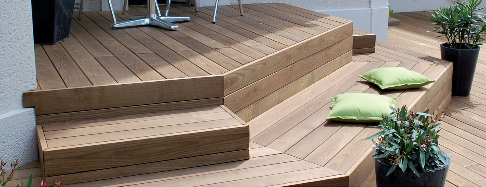

GRAD, VOTRE SPÉCIALISTE BOIS
La société grad est une entreprise de création d’équipements extérieurs implantée depuis 1988 en Alsace, au Nord de Strasbourg.
Spécialisée dans les aménagements extérieurs en mix-matières bois, grès cérame, aluminium, Inox, verre… et pionniers dans la terrasse, nous occupons depuis 2005 la place de leader national dans ce domaine.
« Nous occupons depuis 2005 la place de leader national »
Notre savoir-faire et notre esprit d’innovation nous valent une réputation d’excellence qui dépasse les frontières du pays avec de nombreux concepts brevetés.
Le développement européen est en cours avec déjà des implantations fortes en Allemagne, Autriche, Suisse et Belgique.
Forts de plus de 25 années expériences,nous pouvons aujourd’hui prétendre apporter la solution aux demandes les plus pointues, les plus originales, les plus novatrices…
La prise de participation par l’entreprise alsacienne Burger, depuis avril 2016, nous permettra d’atteindre le très haut niveau de notoriété qui nous revient dans le domaine de l’aménagement de terrasse.
grad c’est qui ?
C’est 49 collaborateurs au siège alsacien (production, logistique, administration,…).
C’est un réseau de près de 100 partenaires formés, répartis dans toute la France pour poser nos produits, chez vous.
C’est de nombreux partenaires à l’étranger pour des chantiers jusqu’au bout du monde !